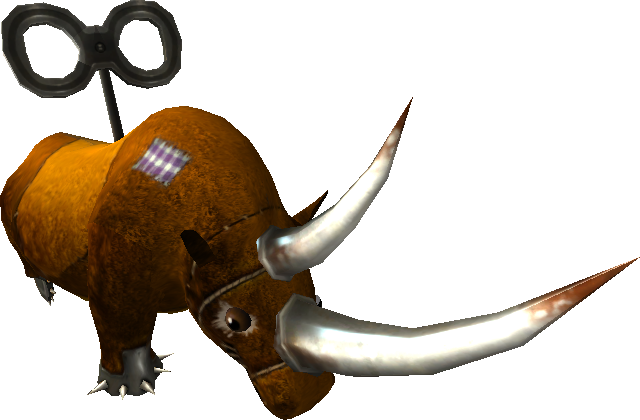

7.6 SIRIUSOPOLIS DOWNTOWN
Estimated timesave over 2.080: 5+ minutes
Map: (Click to expand)

Chapter 7 - Final yard
Finished by hitting a trigger, meaning one can skip from chapter 1 straight to 8.
Chapter 8 - Final yard
Upon starting the chapter, 5 tanks will spawn. 15 seconds after starting the chapter, a multispawner will start, containing 20 rhinos, 25 clowns, and 20 tanks in random order.
Chapter 8 multispawner   | |
|---|---|
| Spawn type | Maintain Group |
| Spawn effect configuration | Projectile (4) + 0.1 (local) |
| Launcher | None |
| Spawn formation | 8 markers, randomized |
| Total Number | 65 |
| Number in group | 10 |
| Initial delay | 0 |
| Single delay | 1.5 |
| Group delay | 4 |
| Spawnee death delay | 0 |
| Total spawntime | 96 (64*1.5) |
| Total bugged spawntime | 118.5 (55*1.5 + 9*4) |
After killing 5 groups (50 units), 5 tanks will spawn over 7.5 seconds
Big spiders also spawn. Killing the two around the building corners triggers another big spider from the front, accompanied by small spiders.
All spiders, tanks, rhinos, and clowns must be killed. Planes must also be killed, but they always fly into buildings killing themselves.
Security Timers
Only chapter 4's timer is shorter than some of its enemy spawners.
| Chapter | Security Timer Length |
|---|---|
| 1 | 5 minutes |
| 2 | 3 minutes 20 seconds |
| 3 | 40 seconds |
| 4 | 30 seconds |
| 5 | Trigger is broken |
| 6 | 2 minutes 30 seconds |
| 7 | - |
| 8 | 7 minutes 30 seconds |